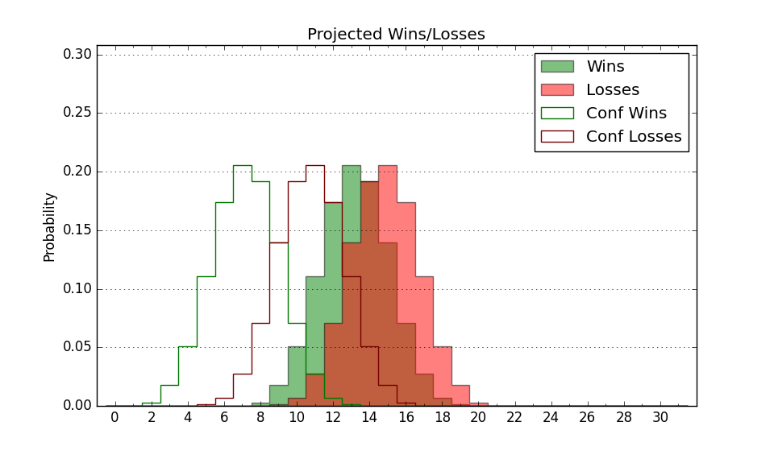

| Home | Game Probabilities | Conferences | Preseason Predictions | Odds Charts | NCAA Tournament |
| City: | Muncie, Indiana | |
| Conference: | Mid-American (6th)
| |
| Record: | 9-10 (Conf) 13-17 (Overall) | |
| Ratings: | Comp.: -9.9 (275th) Net: -9.9 (275th) Off: 99.2 (218th) Def: 109.0 (307th) SoR: 0.0 (145th) |
| Remaining | ||||||
|---|---|---|---|---|---|---|
| Date | Opponent | Win Prob | Pred. | |||
| Previous | Game Score | |||||
| Date | Opponent | Win Prob | Result | Off | Def | Net |
| 11/9 | @Georgia Southern (249) | 30.2% | L 71-82 | -0.5 | -9.3 | -9.9 |
| 11/13 | Nebraska Omaha (346) | 85.1% | W 73-69 | -10.9 | -0.2 | -11.0 |
| 11/18 | (N) FIU (274) | 49.9% | L 60-73 | -16.5 | 3.6 | -12.8 |
| 11/19 | (N) Weber St. (173) | 28.4% | L 74-85 | -5.3 | -4.1 | -9.3 |
| 11/21 | (N) Massachusetts (177) | 28.8% | W 89-86 | 11.9 | 6.2 | 18.1 |
| 11/27 | Indiana St. (220) | 51.4% | W 97-75 | 31.1 | 1.1 | 32.3 |
| 12/1 | @Western Illinois (239) | 27.7% | L 80-93 | 8.6 | -16.3 | -7.7 |
| 12/8 | @Xavier (40) | 4.0% | L 50-96 | -27.6 | 1.2 | -26.4 |
| 12/18 | @Illinois St. (200) | 20.4% | L 64-85 | -10.4 | -6.9 | -17.3 |
| 12/21 | Eastern Illinois (356) | 91.3% | W 75-55 | 4.1 | 0.1 | 4.2 |
| 1/1 | Bowling Green (298) | 69.8% | W 81-80 | -2.7 | -3.5 | -6.3 |
| 1/4 | Kent St. (139) | 35.3% | L 65-66 | -4.8 | 7.7 | 2.9 |
| 1/8 | @Eastern Michigan (304) | 42.1% | W 78-72 | -1.7 | 12.6 | 10.9 |
| 1/11 | @Akron (132) | 12.7% | L 74-84 | 9.5 | -5.9 | 3.7 |
| 1/14 | Buffalo (120) | 30.4% | L 68-74 | -8.4 | 10.1 | 1.7 |
| 1/18 | @Toledo (92) | 7.7% | L 70-83 | -0.3 | 5.0 | 4.6 |
| 1/25 | Miami OH (258) | 61.3% | W 81-64 | 18.0 | 8.4 | 26.4 |
| 1/27 | @Northern Illinois (308) | 43.9% | W 74-67 | 4.7 | 3.4 | 8.1 |
| 1/29 | Western Michigan (333) | 80.0% | W 83-72 | 16.5 | -11.5 | 5.0 |
| 2/1 | @Ohio (131) | 12.7% | L 63-87 | -7.3 | -4.4 | -11.7 |
| 2/4 | Toledo (92) | 22.2% | W 93-83 | 29.4 | -1.5 | 27.8 |
| 2/8 | Central Michigan (323) | 77.1% | L 85-89 | 2.7 | -14.2 | -11.5 |
| 2/12 | @Buffalo (120) | 11.4% | L 74-80 | -3.1 | 14.3 | 11.2 |
| 2/15 | Northern Illinois (308) | 72.7% | L 58-64 | -22.0 | 6.9 | -15.1 |
| 2/19 | @Bowling Green (298) | 40.4% | W 91-82 | 2.0 | 14.2 | 16.1 |
| 2/22 | @Kent St. (139) | 13.8% | L 82-93 | 18.0 | -8.9 | 9.1 |
| 2/26 | Eastern Michigan (304) | 71.3% | W 75-64 | 3.2 | -0.6 | 2.6 |
| 3/1 | Akron (132) | 33.2% | L 60-79 | -13.7 | -12.3 | -26.0 |
| 3/4 | @Western Michigan (333) | 54.0% | W 64-63 | -9.8 | 15.6 | 5.7 |
| 3/10 | (N) Ohio (131) | 21.2% | L 67-77 | -4.5 | -4.6 | -9.1 |
| Stats & Trends | |||||
|---|---|---|---|---|---|
| Current | Day | Week | Month | Season | |
| Composite | -9.9 | +0.0 | -0.3 | -0.6 | -10.7 |
| Comp Rank | 275 | -- | -2 | -8 | -82 |
| Net Efficiency | -9.9 | +0.0 | -0.3 | -0.4 | -- |
| Net Rank | 275 | -- | -3 | -6 | -- |
| Off Efficiency | 99.2 | +0.0 | -0.1 | -1.9 | -- |
| Off Rank | 218 | +2 | -- | -11 | -- |
| Def Efficiency | 109.0 | -0.0 | -0.2 | +1.5 | -- |
| Def Rank | 307 | -- | -2 | +4 | -- |
| SoS Rank | 276 | -- | -8 | -20 | -- |
| Exp. Wins | 13.0 | -- | -- | +0.8 | -2.4 |
| Exp. Conf Wins | 9.0 | -- | -- | +0.8 | -1.1 |
| Conf Champ Prob | 0.0 | -- | -- | -- | -3.4 |

| Advanced Stats | ||
|---|---|---|
| Stat | Value | Rank |
| Off Eff FG % | 0.501 | 178 |
| Off Ast Ratio | 0.135 | 215 |
| Off ORB% | 0.242 | 232 |
| Off TO Rate | 0.179 | 331 |
| Off FT Ratio | 0.390 | 18 |
| Def Eff FG % | 0.533 | 293 |
| Def Ast Ratio | 0.153 | 266 |
| Def ORB% | 0.277 | 233 |
| Def TO Rate | 0.144 | 266 |
| Def FT Ratio | 0.322 | 233 |